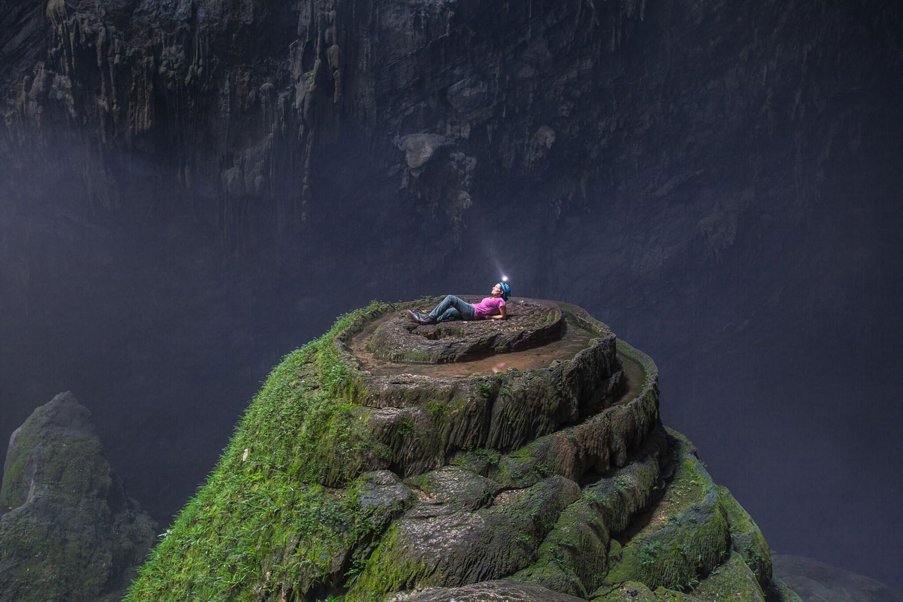

Những địa điểm tuyệt vời không thể bỏ qua
Cái tên "Sơn Đoòng" có nghĩa là "hang sông núi", nó được tạo ra cách đây 2-5 triệu năm bởi nước sông làm xói mòn đá vôi bên dưới ngọn núi Nơi đá vôi yếu, trần nhà sụp đổ tạo ra những giếng trời khổng lồ.
Đang cập nhật
Đang cập nhật

Đang cập nhật